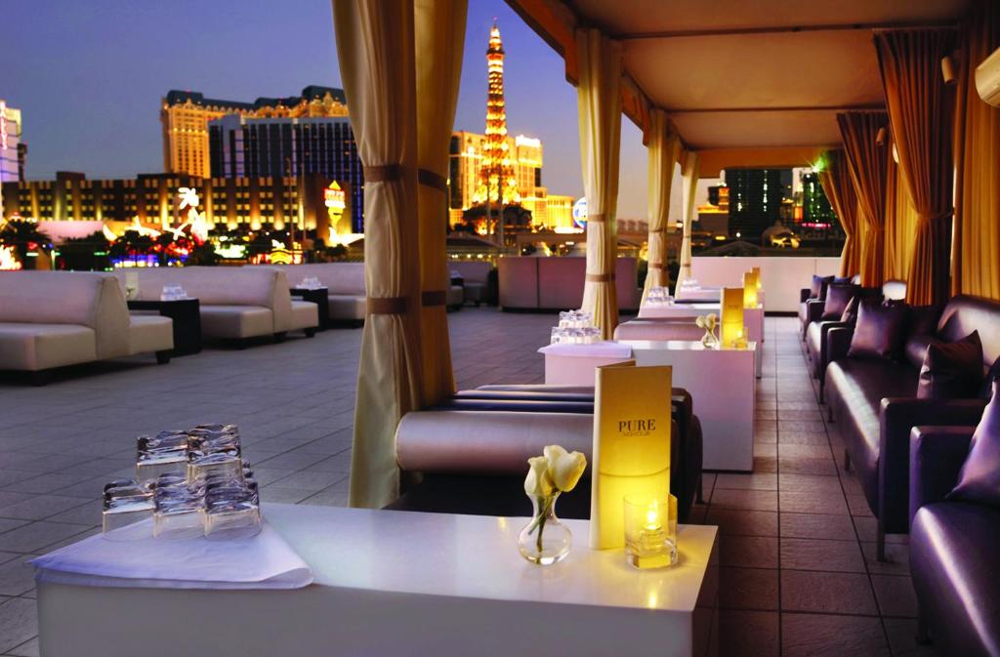
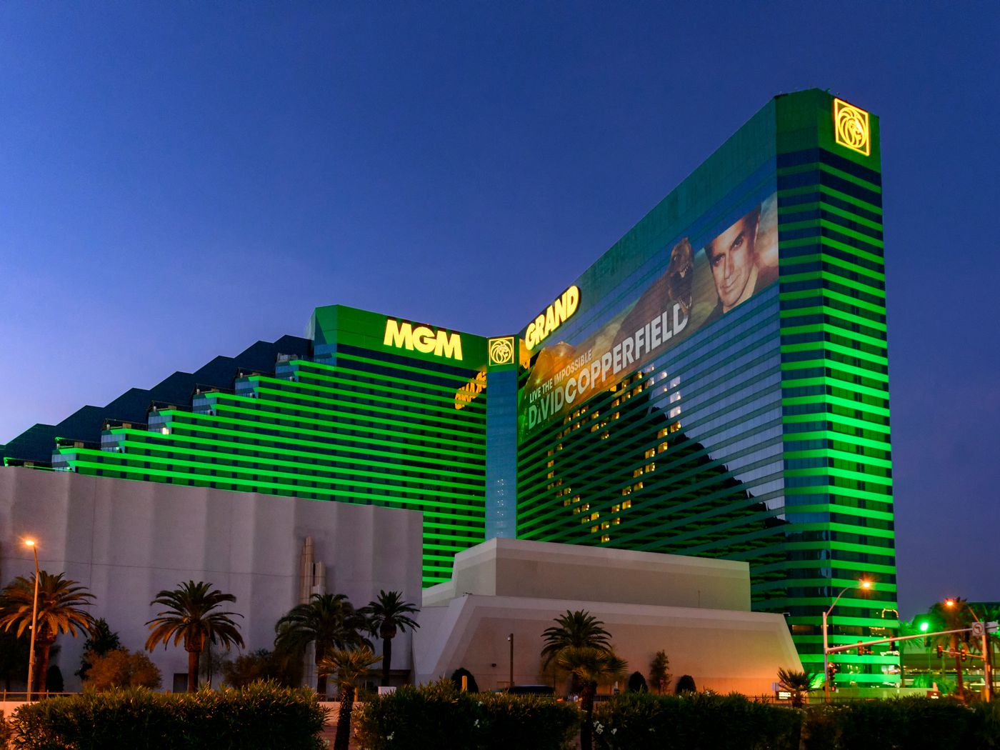
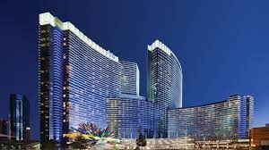

Wynn Las Vegas

The opulent Wynn redefined the resort casino concept when it opened in 2005 with its sun-dappled atrium gardens, floral mosaic floors, private lakes and waterfalls, and the Strip’s only golf course, a par 70 championship course designed by Tom Fazio. The resort’s fans are so devoted, many no longer say they’re going to Vegas, but to Wynn. Other resorts might rest on their laurels, but Wynn and sister resort Encore are in a constant state of glamorization. In 2022, Wynn unveiled a $200 million renovation of its nearly 2,700 Wynn guest rooms and Wynn Tower Suites. The masculine 1940s look is achieved with custom-designed furniture, warm wood accent walls, custom-designed etageres and Cubist-like artworks.
Skylofts At MGM Grand

Most guests of the sprawling 5,000 plus room MGM Grand are completely unaware that 51 duplex penthouses exist on top of the building. For those lucky enough to secure a booking, their ultimate Vegas experience begins well before arrival. A team of concierges is on hand 24/7 to secure hard-to-get reservations, like one at Restaurant Joel Robuchon, the only restaurant in the city to ever receive three Michelin stars. Once guests arrive, they are escorted to lofts ranging in size from 1,400 square feet for a one-bedroom accommodation to 6,000 square feet for a three-bedroom residence.
Aria Resort & Casino

When Aria’s two glass and steel towers opened as part of the massive CityCenter complex in 2009, they brought more modernity to the Vegas resort casino. Aria’s soaring lobby with natural materials is the antithesis of the dark windowless casino room. Sanctuary-like guest rooms have always had high-tech details like one-touch lighting, temperature and curtain controls; Aria’s seven Sky Villas and more than 400 Sky Suites take luxury to a new level. The villas and suites have their own entrance and elevator, personal concierges, private pool and airport transportation.
Nobu Hotel At Caesars Palace

Caesars Palace is a behemoth (it has nearly 4,000 rooms and suites spread over 85 acres), but Nobu Hotel is a little pocket of Zen. Guests of the 182 room hotel in the former Centurion Tower–Nobu Matsuhisa’s first hotel–receive the special attention they’d expect from a preciou s boutique property. An elevator bank accessed through a simple Japanese portal takes guests to the hotel-within-a-hotel. During a 2022 renovation inspired by kintsugi, the Japanese art of repairing broken pottery, designers gave the hotel a warmer, more residential feel. If you’re splurging, you can book the 10,000-square-foot Nobu Villa (also recently refreshed), which comes with butler service, limo transportation, a garden and whirlpool, and a VIP omakase dinner at Nobu restaurant just downstairs. You may never want to leave your new Vegas cocoon..